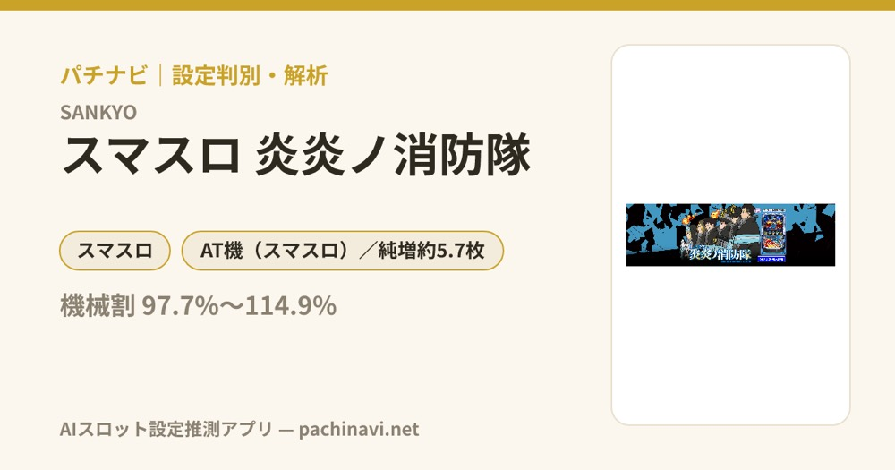

Lパチスロ 炎炎ノ消防隊
灰焔騎士団と初当りBONUS、2つの入口から伝導者の影を越え、炎炎ループとアドラバーストを目指す。
- 導入
- 2024年5月
- メーカー
- SANKYO
- 分類
- パチスロ
主要スペック
15G＋α・BONUS期待度約50%の灰焔騎士団、REG後30G＋α／炎炎BONUS後60G＋αの伝導者の影、15G＋α・BONUS期待度約61%の炎炎激闘、紅丸炎舞、森羅万象、アドラバーストまでを専用画面で体験できます。
- 灰焔騎士団は15G＋α・BONUS期待度約50%
- 炎炎激闘は15G＋α・BONUS期待度約61%
- 炎炎BONUS約230枚・REG／エピソードBONUS約85枚
Lパチスロ 炎炎ノ消防隊の見どころと計算条件
15G＋α・BONUS期待度約50%の灰焔騎士団、REG後30G＋α／炎炎BONUS後60G＋αの伝導者の影、15G＋α・BONUS期待度約61%の炎炎激闘、紅丸炎舞、森羅万象、アドラバーストまでを専用画面で体験できます。
スマスロ 炎炎ノ消防隊を数字で早分かり
灰焔騎士団、初当りBONUS、伝導者の影、炎炎激闘ストック、紅丸炎舞、森羅万象、アドラバーストを機種専用で記録します。
30秒で分かるスマスロ 炎炎ノ消防隊
灰焔騎士団または初当りBONUSからエピソードBONUSをつかみ、複数ストックの炎炎激闘でBONUSを重ねるループ型です。
こんな遊び方に向いている
- 灰焔騎士団15Gの最終PUSHを体験したい
- 炎炎激闘ストックとBONUS連を見たい
- 紅丸炎舞からアドラバーストを狙いたい
遊ぶ前に確認したいこと
- 初当り・BONUS・炎炎ループ確率、主要ゲーム数は公開値
- 炎炎BONUSと約85枚BONUSを分けて表示
- 未公表の入口・特殊ルート振り分けは代表モデル
灰焔騎士団と初当りBONUS
通常時の入口は、十字目変換などから入る15G＋αの灰焔騎士団と、REG／炎炎BONUSの2系統です。灰焔騎士団は伝導者バトル発展率約1/8、バトル勝利期待度約28%、区間全体のBONUS期待度約50%です。
シミュレーターでは通常時の初当りで入口を抽選し、灰焔騎士団は15Gを進めて最終PUSHでBONUS当落を開きます。
伝導者の影とエピソードBONUS
初当りREGまたは炎炎BONUSでエピソードBONUSを取れなかった場合は伝導者の影へ。REG後は30G＋α、炎炎BONUS後は60G＋αの保証があります。
エピソードBONUSはベルナビ10回・約85枚で、消化後は炎炎激闘へ。専用画面では伝導者の影を最後まで進め、エピソードBONUS当選をPUSHで判定します。
炎炎激闘と炎炎ループ
炎炎激闘は1セット15G＋αのBONUS高確率状態で、BONUS期待度は約61%。エピソードに応じて最低2個以上の炎炎激闘ストックを持ち、ストックがある限り潜伏後に再突入します。
炎炎激闘中のBONUSは約9割が炎炎BONUS／ラッキースケベられBONUS、残りはアクセルBONUS・エピソードBONUS・ジョーカーチャンスなど。1セットごとに15Gを進め、PUSHでBONUSと残りストックを表示します。
紅丸炎舞・森羅万象・アドラバースト
紅丸炎舞はBONUS当選まで続く上位版の炎炎激闘で、当選するBONUSは炎炎BONUS以上。裏・炎炎激闘や森羅エピソードなどから森羅万象を目指します。
森羅万象の最終PUSHに成功すると、初期20Gの小役ゲームと10G／20G／30GのJACで増やすアドラバーストへ。終了後は森羅万象 廻の引き戻しも抽選します。
固定条件と簡略化する範囲
- 約33.8G/50枚・1,000円46枚貸し・5.2枚交換で固定
- 設定1・2・4・5・6を均等抽選し、初当り・BONUS・炎炎ループは公開設定別値を使用
- 灰焔騎士団、伝導者の影、炎炎激闘ストック、紅丸炎舞、森羅万象、アドラバーストを専用進行
- エピソード当選率、特殊炎炎激闘・上位ルートの出現率など未公表部分は体験用代表値
- 19,000枚到達時はコンプリート表示
平均Gと投資目安の計算
掲載する炎炎ループ初当り約1/790は設定1基準です。当サイトでは50枚あたり33.8G、1,000円46枚貸しの固定条件から、設定1基準の平均投資目安を約25,400円と計算します。
シミュレーターでは設定1・2・4・5・6を均等抽選します。設定1・2・4・5・6で公開されている初当り値を個別に使います。公開されていない特化ゾーン・上位到達率の設定差は加えません。 換金は5.2枚交換で固定し、結果とランキングに設定を表示します。
シミュレーション結果の見方
当るまで初当り・炎炎ループまでのゲーム数
設定設定1・2・4・5・6から抽選された今回の設定
上位到達森羅万象とアドラバーストへの到達
最終収支差枚と5.2枚交換の収支目安
結果は自動で「マイ記録」に保存され、同じ機種を何回試したか、最高収支、勝率をあとから確認できます。
簡易シミュレーターについて
初当り・炎炎ループ・アドラバーストの流れを固定条件で体験できます。JavaScriptを有効にすると、この位置にシミュレーター、演出、マイ記録、機種別ランキングが表示されます。
結果は娯楽・確率理解のための参考表示です。金銭的価値や交換価値はなく、実際の勝敗や収支を保証しません。18歳未満の方の利用はお控えください。
スマスロ 炎炎ノ消防隊のよくある質問
スマスロ 炎炎ノ消防隊はどんな台？
15G＋α・BONUS期待度約50%の灰焔騎士団、REG後30G＋α／炎炎BONUS後60G＋αの伝導者の影、15G＋α・BONUS期待度約61%の炎炎激闘、紅丸炎舞、森羅万象、アドラバーストまでを専用画面で体験できます。 灰焔騎士団は15G＋α・BONUS期待度約50%が主な確認ポイントです。
スマスロ 炎炎ノ消防隊の平均投資目安は？
設定1基準の炎炎ループ初当り約1/790と、50枚あたり33.8G・46枚貸しの固定条件から、平均25,400円を目安として表示します。実際の設定や遊技状況で結果は変わります。
設定とゲームの流れはどう抽選する？
開始時に設定1・2・4・5・6から1つを均等抽選し、初当り、炎炎ループ、森羅万象、アドラバーストの順で到達を判定します。設定は最終結果とランキングに表示します。
収支はどう計算する？
1,000円46枚貸し・5.2枚交換の固定条件で投資、換金、収支目安を計算します。実店舗の再プレイ、持ちメダル、端数処理は含みません。